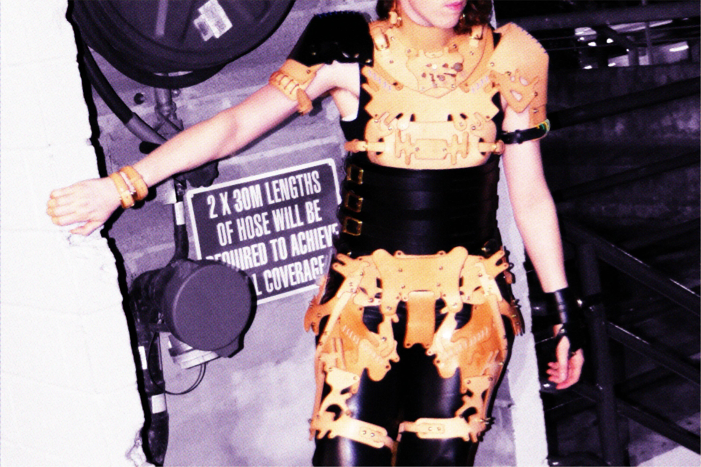
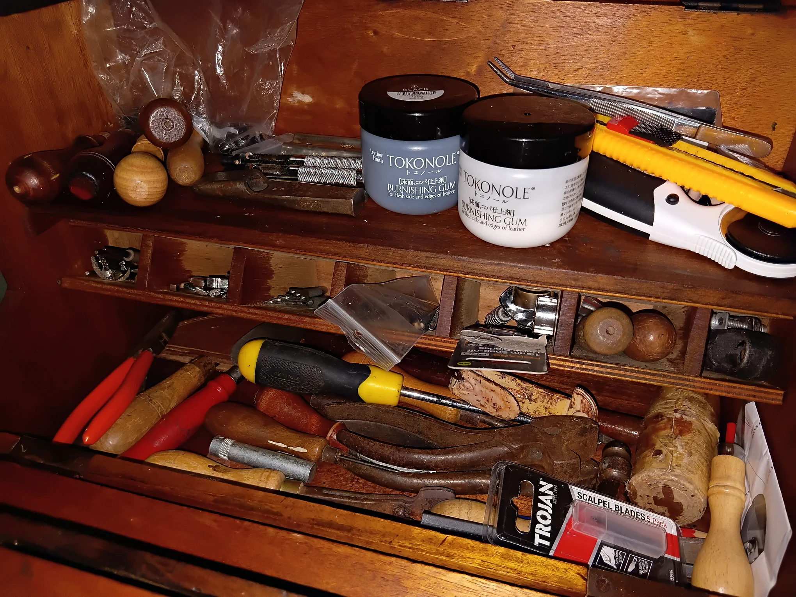

Welcome to BrioSatellite
My name is Bri. I am a very cool artist and designer, primarily working with leather. I love iron, rust, circuitry, and being a human body powered by blood and oxygen. I design as Fey Cavalcade, check out my portfolio page.
My name is Bri. I am a very cool artist and designer, primarily working with leather. I love iron, rust, circuitry, and being a human body powered by blood and oxygen. I design as Fey Cavalcade, check out my portfolio page.
